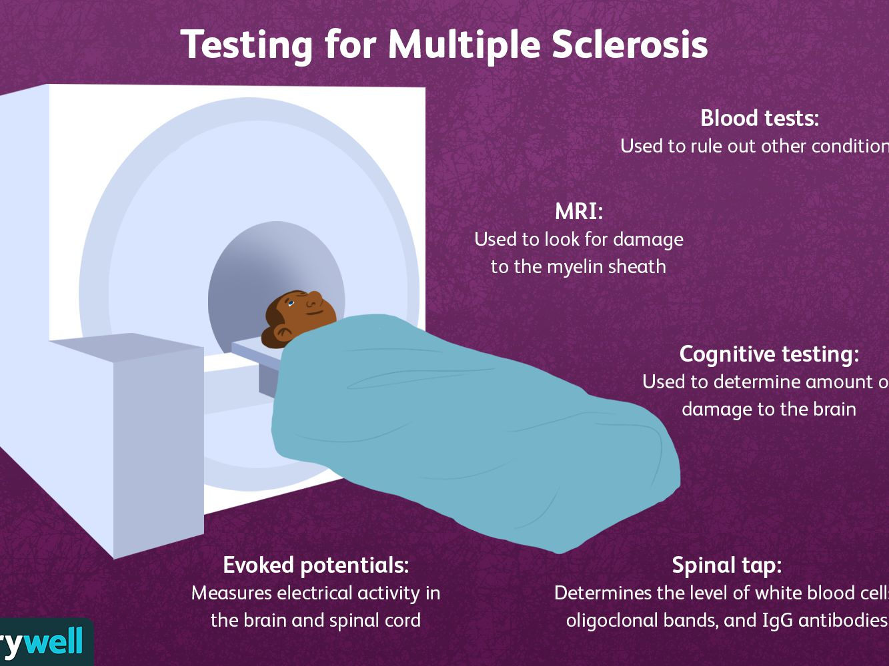

Learn to recognize and manage the possible symptoms of MS, which range from mild to severe.
MOST COMMON
Fatigue
Vision Problem
Walking Difficulties
Bladder Problems
Numbness or Tingling
Pain and Itching
LESS POSSIBLE SYMPTOMS
Speech Problems
Swallowing Problems
Tremor
Loss of Taste
Breathing Problems
SECONDARY SYMPTOMS AND THE IMPACT OF DISEASE
Bladder dysfunction can cause repeated UTI
Immobility can cause pressure sores
Inactivity can cause loss of muscle tone, weakness, poor posture, decreased bone density, inefficient breathing
The impact of MS on your life can lead to additional social, vocational and psychological complications. For example, if you are no longer able to drive or walk, you may not be able to hold down your usual job. The stress and strain of dealing with MS often alters social networks and sometimes fractures relationships. Problems with bladder control, tremor or swallowing may cause people to withdraw from social interactions and become isolated.
Diagnosis for MS?
There are no specific tests for MS. Instead, a diagnosis of multiple sclerosis often relies on ruling out other conditions that might produce similar signs and symptoms, known as a differential diagnosis.

YOUR DOCTOR MAY THEN RECOMMEND:
Blood tests, to help rule out other diseases with symptoms similar to MS. Tests to check for specific biomarkers associated with MS are currently under development and may also aid in diagnosing the disease.
Spinal tap (lumbar puncture), in which a small sample of cerebrospinal fluid is removed from your spinal canal for laboratory analysis. This sample can show abnormalities in antibodies that are associated with MS. A spinal tap can also help rule out infections and other conditions with symptoms similar to MS.
MRI, which can reveal areas of MS (lesions) on your brain and spinal cord. You may receive an intravenous injection of a contrast material to highlight lesions that indicate your disease is in an active phase.